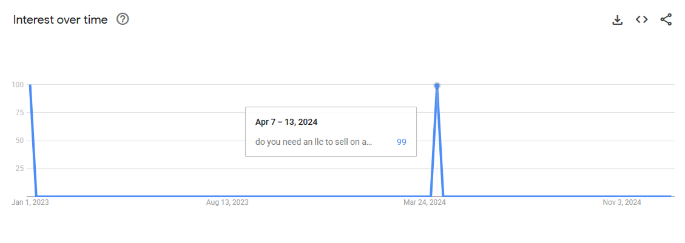
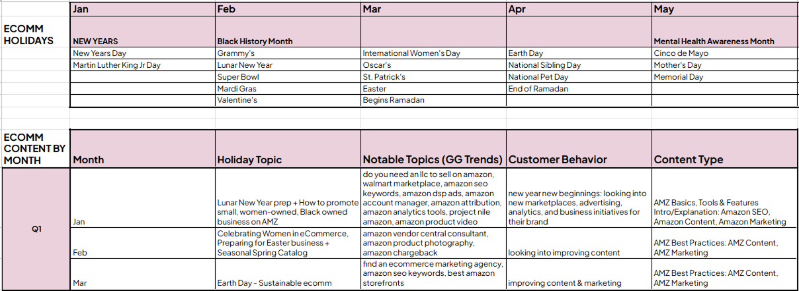
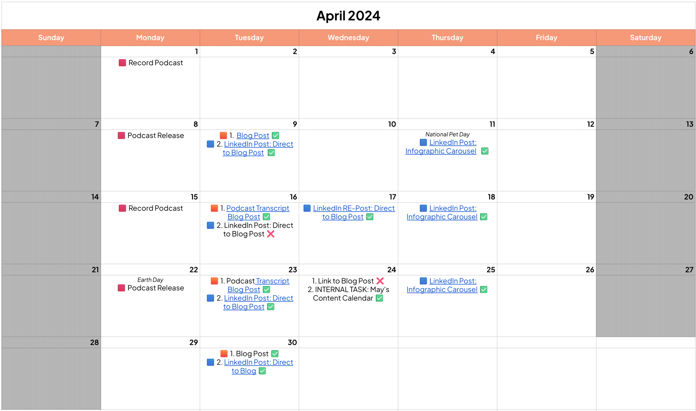

Key Impacts

Content Strategist

In-House Project

2023-2024

Semrush, Google Trends, Google Analytics
Project Overview
Context
VASO Group, an eCommerce brand agency, wanted to restart their blogging efforts after a year-long hiatus to support the launch of their new website. They wanted fresh content that is relevant and up to SEO standards to rank higher on Google's search results page and beat out other local competitors.
My Role
As the company's Digital Marketing Strategist, I was solely responsible for the creation and execution of this plan, under the supervision of my manager.
Brief
- Generate a content strategy that is highly engaging and relevant to educate and convert users to leads.
- Coordinate blog efforts with social media posting to boost visibility on LinkedIn.
The Problem
VASO Group's current content structure and strategy was both disorganized and misaligned with what readers wanted:
- Blog topics were spread across multiple aspects of the Amazon selling experience, but not specialized in the company's service offerings
- Blog article topics were not based on data-driven keyword and trends research to accurately anticipate user needs
- Blog publishing frequency was low and erratic
This misalignment contributed to lower audience engagement and increased difficulty in building and maintaining a loyal follower base.
Design Approach
Target Users
- Businesses who are looking to launch on Amazon
- Businesses who are actively in the process of switching agencies
- Businesses who are shopping around for a new agency
Methods
- Competitive Analysis
- Keyword Research
- Topic Clustering
Design Process
Design Goals
01
Keep topics relevant and timely to effectively anticipate user needs
02
Ensure topics are explored in depth to provide value to readers
03
Utilize visual aids and other multimedia to enhance written content
04
Ensure topics of discussion are aligned with services offered
05
Maintain a regular uploading schedule without overburdening the staff (myself)
Competitive Analysis
I started the project by examining where VASO was in relations to its competitors. We were competing against 4 other agencies: Nuanced Media, Bobsled Marketing (now Acadia), Orca Pacific (now .monks), and Palmetto Digital Marketing Group. They were of the same scale and handled similarly-sized clients such as ours.
Using Semrush, I conducted a competitive analysis to find out:
- What keywords these competitors were ranking for
- How high/how low were they ranked for each keyword
- If they were using organic or paid advertising to rank for the keyword
Once analyzed, I was able to gather a list of opportunity keywords where no one had ranked for, as well as lower-ranked keywords where I knew our content could beat them out.
Keyword Research
Semrush Keyword Research
From gaps & opportunities identified in the competitive analysis, I looked for keywords that we had an actual chance ranking for. Since the website was newly redesigned and never optimized for SEO before, this was a necessary step in improving our online visibility and brand awareness.
Some metrics I looked for:
- Keyword search volume: to see if there was a big enough audience to engage with
- Keyword difficulty: to see if the overall competition on the keyword was tough
- Cost per click: to see if the keyword was expensive to bid on if using paid advertising
Google Trends Research
Another layer to this research was with Google Trends. I searched for Amazon-related keywords on Google Trends to look for any one-off keywords that got popular outside of the regular eCommerce calendar, as they would usually be more niche questions regarding new Amazon tools or reports.
Topic Clustering
From these opportunity keywords, I turned inward to examine our current strengths and identify topics that would be most relevant to discuss.
Once again, I used Semrush's topic clustering feature to identify the top keywords we were currently ranking for, and what other "buckets" of topics might be beneficial to expand to. All the while, I still kept in mind the knowledge of my coworkers, who would be subject matter experts on these topics, to make sure we were delivering in-depth analysis and insights to the reader.
Annual Strategy
By including national holidays and the eCommerce industry's important milestones in the annual content plan, I had a solid timeline for monthly relevant topics. I then layered this timeline with Google Trends findings to add the most-searched queries to each month's list of potential topics.
Monthly Strategy
From the annual strategy, I drilled deeper into each month to outline the monthly content calendar. I set routine uploading days and blend different types of content together to create more engaging posts. I also researched LinkedIn post performance data and landed on a twice per week schedule to maintain engagement while not overworking myself.
Results
The proposed content calendar was approved and slated for execution immediately afterwards on both the website side and LinkedIn side. Proposals for podcast recording sessions were rejected due to a lack of time and resources, so subsequent monthly calendars removed that type of content.
Within nine months...
VASO Group overtook all competitors in overall keyword rankings
Overall website ranking improved by 25 positions
Organic traffic increased 4x
SEO visibility increased 2483%